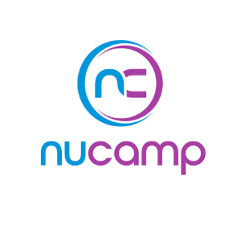
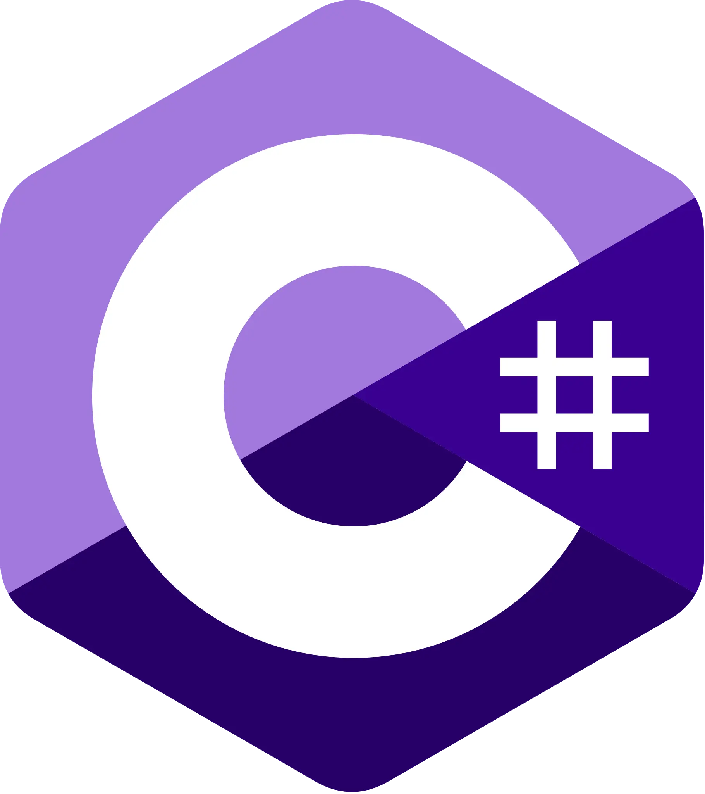
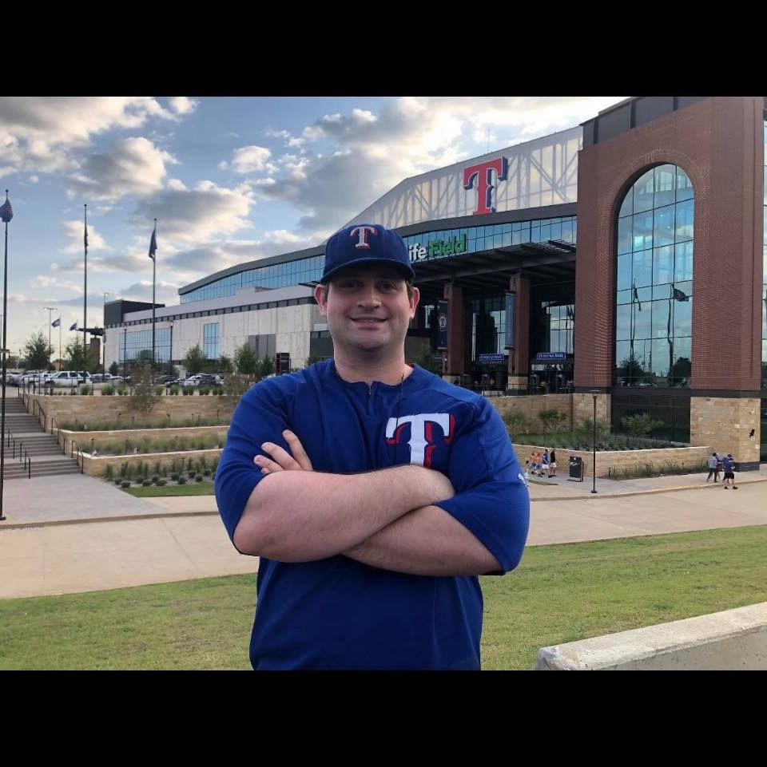
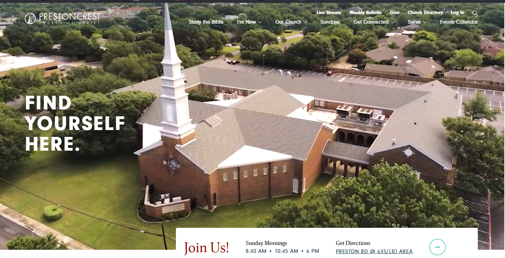
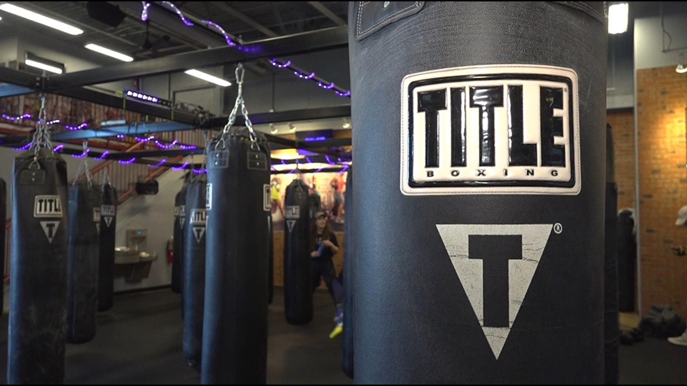
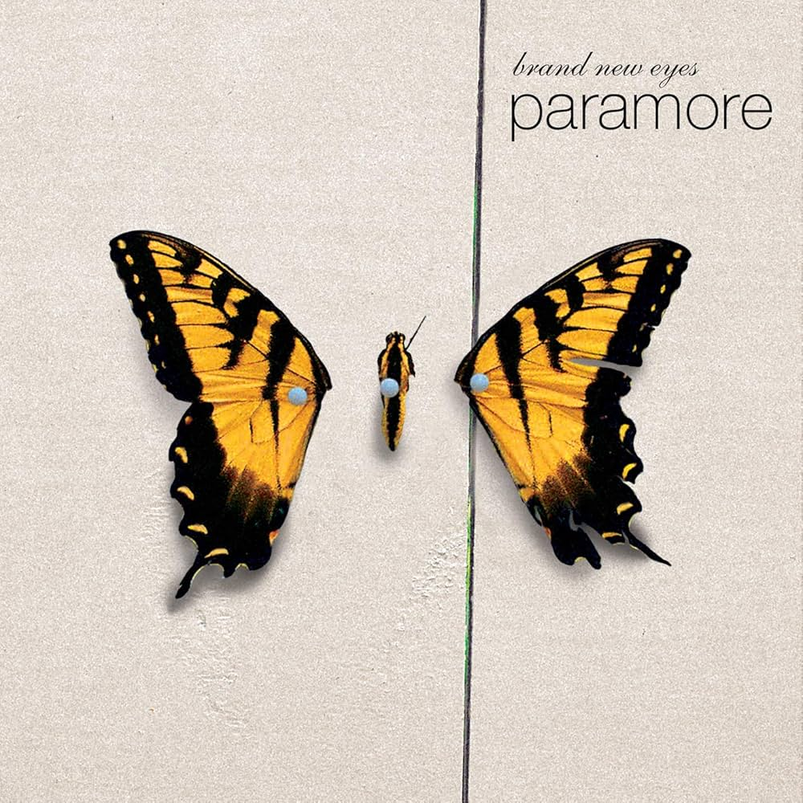

Thank you very much for visiting my webpage. Let me take a moment to introdudce myself. My name is Andrew and I am currently enrolled in Dallas College with the hopes of learning programming and landindg an internship.
I have lived in Dallas my entire life. In terms of my professional background I have worked for companies such as Sherwin-Williams, State Farm, and Geico. I gradudated from the business school at the University of Texas at Arlington with a degree in Marketing.
When I was in college I idolized entreprenurs such as Mark Cuban and Steve Jobs. I suppose the apple craze and shark tank took hold of me. Around that time they had introduced the ipad and iphone and I said to myself wouldn't it be great if I could create something wonderful that changed the world just as they did.
I hold the belief that in order to run a successful business you must really be excellent in all aspects of the business from your engineering of the products to your marketing and customer service to your ability to please your shareholders. I decided that having customers and high sales solved everything so I went the Marketing route.
Thats not to say it is impossible. Indeed if you are able to diagnose the customers need with probing questions and convince them to sign up for discounts you can bring back the need at the time of the sale and help them get a customized plan to fit their needs in the moment.
And if you are great at sales you get compensated very well for it.
The Geico lizard is very charming.My Alma MaterI looked up to Steve Jobs in college.
My Career
If I am doing well in sales why study programming?
I remember it well. I was in a meeting with the other salaes team members when management walked in. They told us they were slashing our sales commissons and moving the business to StateFarm.com
At first I tried to work the role I was in, looking at different departments in the company. I just didn't think underwriting was exciting and I didnd't think the conversations with claims were all that pleasant. Customer escalations was also eliminated for the same reasons.
I explained my problem to a good friend and saw his computer screen had code on it. He introduced me to programming. (Jesse, you may never read this, but thank you brother for doing so.) I started working on the exercises. A few thoughts crossed my mind.
I could take this skill anywhere. There are only so many places that would care about my insurance sales training. Geico did, but I doubt wells fargo would be deeply interested in how you can save money by participating in the Drive Safe and Save and Drive Easy discounts. But could I know python and sql and work at a bank? Yes, I figured that could work. I could take programming wherever I wanted to go. If I were ever laid off, my knoweldge and expertise could go with me.
After landing a sales job at Geico I realized that there was a lot of reduandant conversations. I was having the same conversation every day for 10 hours three days in a row. Like I said earlier not every customer is willing to buy. There are obstacles that are simply out of your control. With programming its your skills and ability to research and collobrate versus the team deadline. Every minute counts. And there are differnet languages and projects to master.
I want to have a family someday and I believe that if I landed a programming job I could accomplish that.
I am a nerd. Computer programming is a job where nerds gather. I have always felt at place at the different programming groups I have joined. Nerds are very intelligent and polite.
I want to create great things that people use. I still see myself building something that would create a helpful impact in our world. You can do a lot with the C# language and motivation.
I hope to continue to study programming in college and gain internships and eventually join Geico's technology development program.Codecademy Logo

I went to Nucamp Coding BootcampPython Programming Language Offical Logo

C Sharp Programming Language Offical LogoJava Programming Language Offical Logo
My Hobbies
As for my personal hobbies when I am not working or studying I enjoy sports, video games, boardgames, and watching anime shows with my friends.
I am also a member of the PrestonCrest Church of Christ.

Here I am at the Texas Rangers Stadium

PrestonCrest Church Of Christ

I box at Plano Title Boxing Club For Exercise Nerds are encouraged to share their favorite games, movies and shows.
My Favorite board games are: The Captain is Dead, Zombiescide, Eldrich Horror, The Red Dragon Inn, and Nemesis.
My favorite video games are: The Last of Us, Fallout, Final Fantasy, Sports Video Games, Ultimate Chicken Horse
My Favorite Artists: Paramore, AJR, Marron 5, My Chemical Romance, TakeMeHome
My Favorite Anime: Yu Yu Hakusho, DragonballZ, Naruto, Bleach, Code Geass
My Favorite Boardgame The Captain Is DeadThe Last of Us

My favorite band ParamoreMy Favorite Anime Code Geass